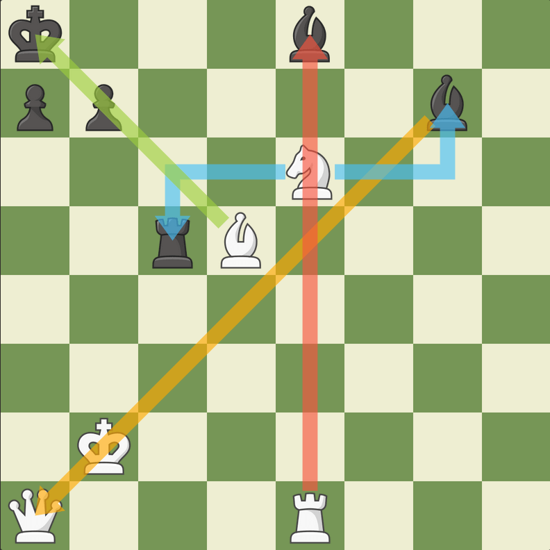

Gra w środku
Gra środkowa w szachach jest fazą gry, która następuje po otwarciach i poprzedza końcową fazę gry. Jest to często decydująca faza, w której gracze starają się zdobyć przewagę poprzez kontrolę nad planszą, rozwijanie ataków i unikanie pułapek. Oto kilka wskazówek, jak skutecznie prowadzić grę środkową:
Kontrola centrum: Centrum planszy jest kluczowe dla gry środkowej. Staraj się kontrolować te pola swoimi pionami i figurami, co umożliwi Ci lepsze rozmieszczenie i ruchy.
Rozwój figur: Kontrola centrum jest często osiągana poprzez rozwijanie figur. Staraj się rozwijać swoje figury szybko i skutecznie, aby uzyskać przewagę.
Zasada dwóch ruchów: Staraj się unikać zbyt wielu ruchów pionków w początkowej fazie gry środkowej, aby nie tracić czasu. Zamiast tego, wybieraj ruchy, które rozwijają figury i kontrolują centrum.
Kontrola linii otwartych: Szukaj okazji do otwarcia linii swoich figur, aby móc atakować przeciwnika lub prowadzić do wymiany figur na korzystnych warunkach.
Bezpieczeństwo króla: Upewnij się, że twojego króla chroni odpowiednio wiele pól i nie pozostawiasz go w zbyt narażonej pozycji.
Kreowanie planu: Opracuj plan działania na podstawie analizy pozycji i możliwych zagrożeń. Czy to atak na króla przeciwnika, czy też stworzenie silnej pozycji na planszy, mającej na celu długofalową kontrolę.
Analiza konkretnych pozycji: Staraj się zrozumieć, jakie są cele twoje i przeciwnika w danej pozycji. Analizuj zagrożenia i możliwości obu stron.
Taktyka i kombinacje: Szukaj możliwości taktycznych, które mogą prowadzić do zyskania przewagi, np. uderzeń, motywów szachowych czy kombinacji.
Unikaj błędów: Staraj się unikać błędów, które mogą prowadzić do utraty materiału lub niewygodnej pozycji. Bądź świadomy potencjalnych zagrożeń i pułapek.
Gra środkowa w szachach wymaga rozsądnego podejścia, cierpliwości i zdolności do analizy pozycji. Ćwiczenie tej fazy gry pozwoli Ci na lepsze zrozumienie strategii i prowadzenie gry na wyższym poziomie.
